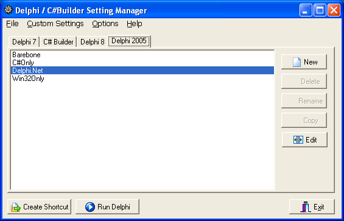
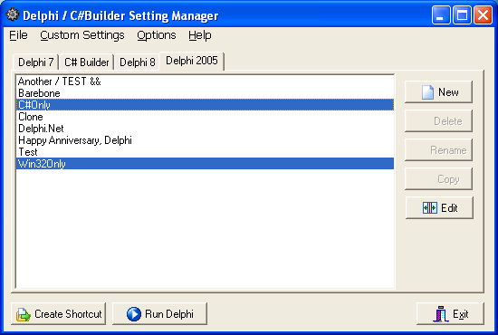
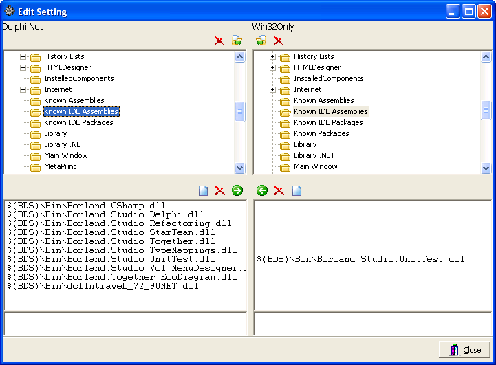
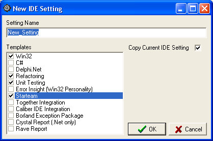

Delphi / C# Builder
Setting
Manager
Last Update : 07/01/2005.
Delphi / C#Builder Setting Manager Release 1.2 is released.
Disclaimer:
This utility is a freeware with source and provided as is, use it at
your own risk.
What is Delphi Setting Manager?
Delphi / C# Builder Setting Manager (or, Delphi Setting Manager) is
a utility to manage custom settings for
Galileo IDEs (Delphi 6, Delphi 7, C#Builder, Delphi 8, and Delphi
2005). It reads data from the
HKEY_CURRENT_USER\Software\Borland\BDS\X.X for BDS IDEs, or it reads
data from HKEY_CURRENT_USER\Software\Delphi\X.X.
This utility only writes keys and values under
HKEY_CURRENT_USER\Software\Borland\CustomSettings. The expected
behavior of this key, you will not be able to alter your default Delphi
setting,
and corrupt your default Delphi setting by accident. If this utility
corrupts or alter the Delphi default setting, that is a bug. Please let
me know if you found a bug.
The settings for each IDE is stored under
HKEY_CURRENT_USER\Software\Borland\CustomSettings\<IDE
Identifier>\<Setting Name>, the File - Save Setting to File
will create a .reg file of the selected custom setting. The .reg file
can be imported into different PC using regedit. The .reg file does not
contain the license key, and authorization code.
I hope you find this utility useful.
Erwien Saputra
http://blogs.slcdug.org/esaputra
http://www.codeline.net
Downloads:
Binary Only
(Release 1.2 - 07/01/2005)
Source only
download (Release 1.2 - 07/01/2005)
Feature Summary
- Supports Delphi 6, Delphi 7, Delphi 8, Delphi 2005, and C#Builder.
- Saves all custom settings under one key.
- Create shortcut to launch the custom setting.
- Launch Delphi from within Delphi Setting Manager.
- Create a new custom setting with the option to use Delphi default
setting for the new setting.
- Copy, rename, delete the existing custom setting.
- Saves a custom setting as a .reg file (License information are
not saved to the .reg file).
- Remember the last selected Delphi version and last selected
custom setting.
- Edit custom setting, copy, synchronize, or delete keys and values
between custom setting or with Delphi default setting.
- Edit between two custom settings by selecting two custom
settings and choose Edit.
- Edit between a custom setting and Delphi default setting by
setting a custom setting and choose Edit (Delphi default setting is
read-only).
- Use right-click (pop-up menu) to access the menu.
- Different registry values will be displayed in different color.
- Create a new custom setting using a set of templates.
Thanks
Thanks to Lachlan Gemmell for the idea and the original code for the
edit setting functionality.
http://lachlan.gemmell.com
Change Log
Delphi Setting Manager 1.2 - 07/01/2005
This version includes support for template. One or more template can
be
applied to the new setting. The settings are stored as TEMPLATE.XML.
There are several pre-defined settings, Barebone for Delphi 7, Delphi
8, and C# Builder 1.0. Barebone template is useful to create very fast
text editor with syntax highlighting.
For Delphi 2005, the available pre-defined templates are Win32,
Delphi.Net, C#, Refactoring, Unit Testing, Error Insight (Win32
Personality), Starteam, Together, CaliberRM, Borland Exception package,
Crystal Report, and Rave Report.
Delphi Setting Manager 1.1 - 03/12/2005
This version is released because I think the improvement on the Edit
Setting will be very helpful. In this version, buttons are available to
synchronize two settings. Popup menu was not that intuitive. I released
this because I found a problem with custom settings (not related to
this utility). Check out my blog for more detail.
- Added buttons to the Edit Setting form.
Delphi Setting Manager 1.0 - 02/25/2005
- Added keyboard shortcuts for Edit Setting form (Thanks, Jouni
Aro).
- Added keyboard shortcuts for the main form.
- Fixed bug when running setting with spaces.
- Fixed bug when clearing a name value.
- Prevent invalid characters creating/renaming/copying a custom
setting.
- Replaces invalid character with underscore '_' when saving a
shortcut and exporting a custom setting to a .reg file.
- Set main form's Scaled property to false, as workaround for
desktop with different DPI/font size (Thanks, Michael).
- Added Edit Setting to the menu.
- Added minimum size constraint to the main form.
- Fixed bug that crashed the application when the ini file contains
invalid information.
- Known bug / limitation:
- The forms for creating new setting, renaming or copying an
existing setting may not be displayed correctly with desktop with
desktop with extreme DPI / Font size. There is bug with Delphi form
when Scaled property is set to true and controls have anchors. QC: 10068.
Delphi Setting Manager 0.9 (beta 3) - 02/16/2005
- Improved features and stability of the edit custom setting
feature.
- Copy registry keys between custom settings or from Delphi
default setting.
- Delete custom setting keys.
- Copy value names between custom settings or from Delphi default
setting.
- Delete or clear custom setting value.
- No more exception. :)
Delphi Setting Manager 0.9 (beta) - 01/03/2005
- Added the ability to save a custom setting as a .reg file (the
license information is removed from the .reg file).
- Delphi Setting Manager remembers the last selected tab, the last
selected custom setting, the size and location of the main window.
- Added the functionality to edit a custom setting using the
default Delphi configuration as template.
- Added menu on the form.
Delphi Setting Manager (beta) - 12/15/2004
- It has the ability to manage custom settings for Delphi 6, Delphi
7, C#Builder, Delphi 8, and Delphi 2005.
- It has the ability to create a shortcut to launch Delphi using a
specific custom setting.
- It has the ability to launch Delphi using a selected custom
setting.
- It has the ability to create a new setting based on the default
Delphi setting.
- It has the ability to detect which IDE is installed.
Main form screen shot:

Select two custom settings and click edit to synchronize or to edit
between two settings. Use right click on TreeView and ListBox to access
the menu.

Copy and delete key values.

Select one custom setting and click edit to synchronize it with Delphi
default setting. Delphi default setting will be read-only.
Look that the values that are different will be displayed in green.
Use template to easily create a custom setting.
